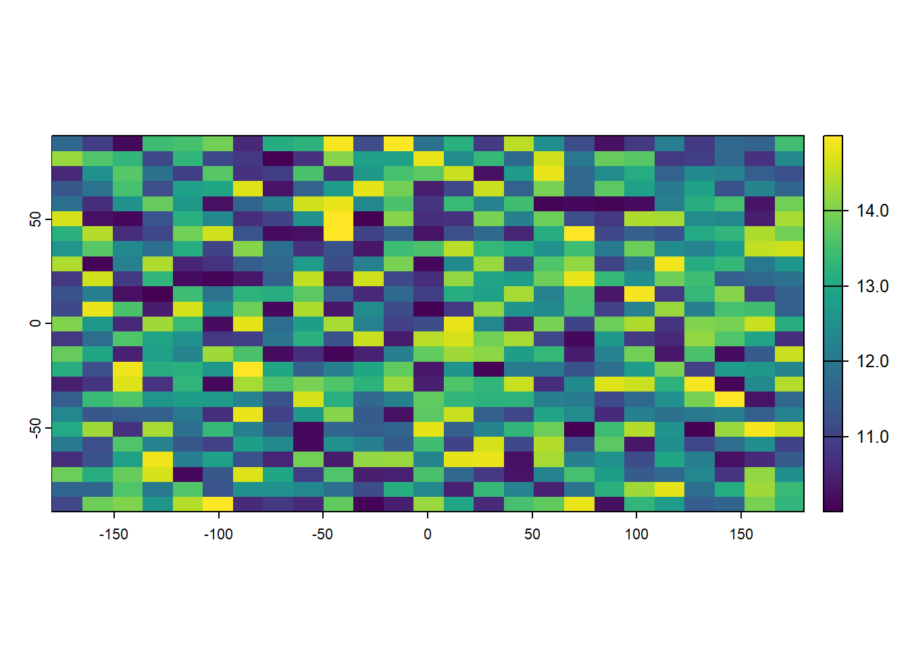
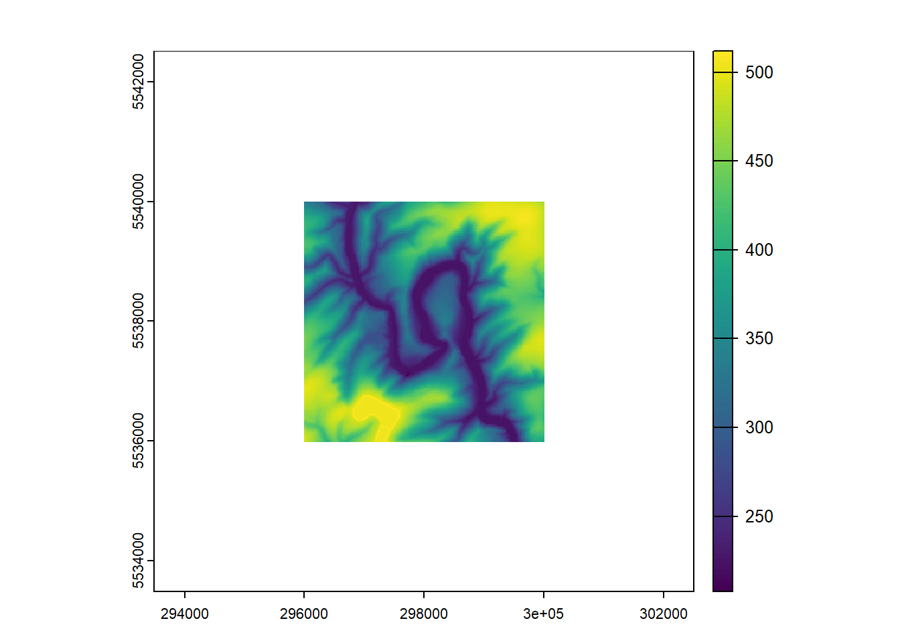
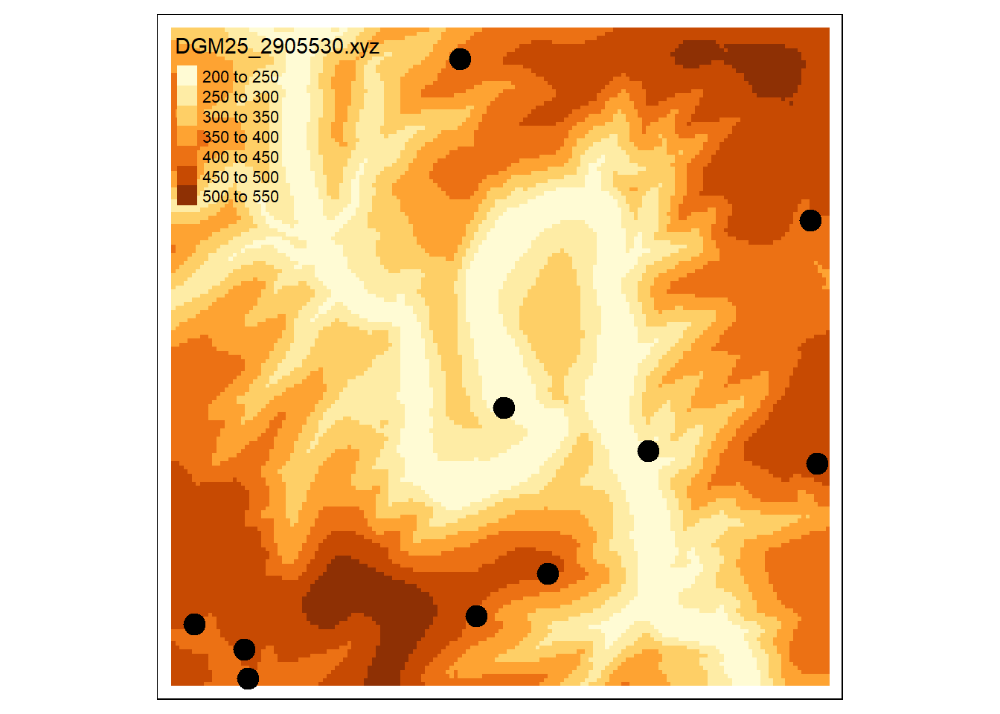
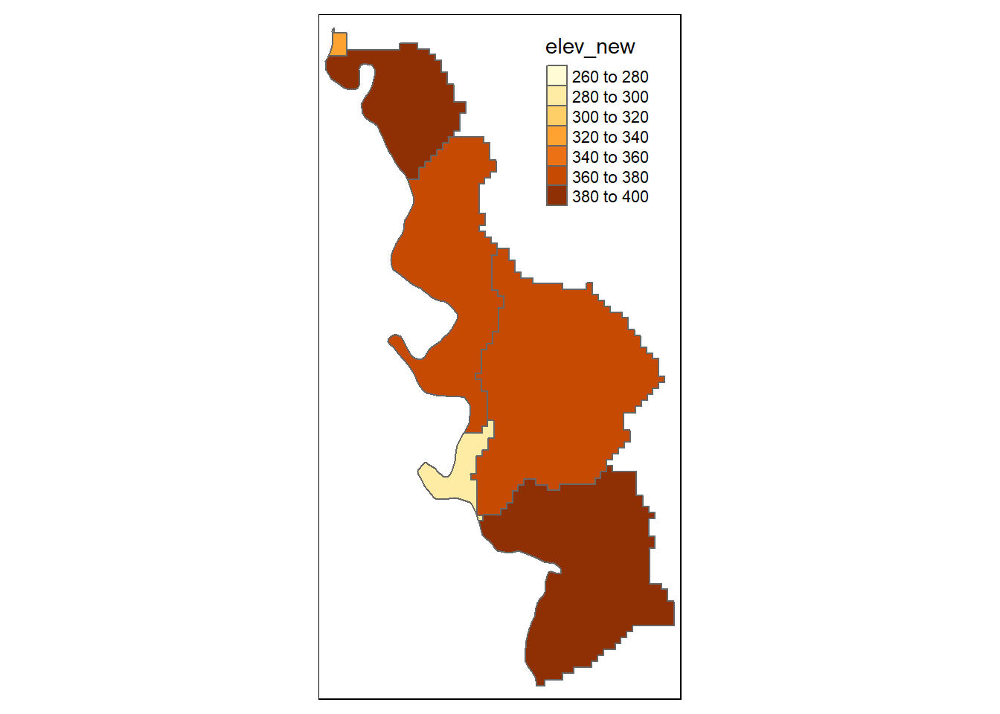

Chapter 2 Rasters in R: The terra package
For the longest time, when you wanted to manipulate raster files in R, the raster package was your tool of choice. And it still is a well-proven and tested alternative to the newer packages, one of which we will discuss today: terra.
2.1 Basic idea
terra implements two new object classes: SpatRaster and SpatVector. It is written and maintained by Robert Hijmans who also did so for the raster package. In that sense you can think of terra as the sequel to raster. Why did Robert Hijmans decide we need a new package? Well, the problem of creating a widely used R package is that other packages start to use and depend on it. These packages depend on the originnal package working the way it did, when the secondary package was written. So even if you don’t like certain aspects of your package anymore, you can’t just go ahead and rewrite them. Robert Hijmans thinks that raster has grown to be unnecessarily complex with over 200 functions. It’s slower than it could be and doesn’t support HDF5 files, which is a popular format for complex satellite data. terra is faster, simpler, and more capable. However, when you know raster, you also know how to do most things in terra.
2.2 Creating a new Raster
The easiest way to specify a new raster is by calling rast() without any arguments.
## class : SpatRaster
## dimensions : 180, 360, 1 (nrow, ncol, nlyr)
## resolution : 1, 1 (x, y)
## extent : -180, 180, -90, 90 (xmin, xmax, ymin, ymax)
## coord. ref. : lon/lat WGS 84 (CRS84) (OGC:CRS84)As you can see, the new object covers the whole earth and is projected using longitude and latitude on a WGS84 globe. The resolution is 1 by 1 which means each cell covers 1 degree of latitude and one degree of longitude. We can specify the extend and resolution of the rasters we create. This following raster covers the southern hemisphere.
## class : SpatRaster
## dimensions : 180, 360, 1 (nrow, ncol, nlyr)
## resolution : 1, 0.5 (x, y)
## extent : -180, 180, -90, 0 (xmin, xmax, ymin, ymax)
## coord. ref. : lon/lat WGS 84 (CRS84) (OGC:CRS84)As you can see, this also automatically altered the resolution to 0.5. We cut the area in half so the corresponding resolution is also cut in half. By explicitly setting the resolution, we can prevent this from happening.
We can also specify the number of rows and cells.
You can check the resolution of a raster with the res() function.
The function can also be used to compare the resolution of two (or more) rasters.
## [1] TRUEWe can also res() to change the resolution of a raster after creating or loading it.
## class : SpatRaster
## dimensions : 18, 36, 1 (nrow, ncol, nlyr)
## resolution : 10, 10 (x, y)
## extent : -180, 180, -90, 90 (xmin, xmax, ymin, ymax)
## coord. ref. : lon/lat WGS 84 (CRS84) (OGC:CRS84)## class : SpatRaster
## dimensions : 2, 36, 1 (nrow, ncol, nlyr)
## resolution : 10, 100 (x, y)
## extent : -180, 180, -90, 110 (xmin, xmax, ymin, ymax)
## coord. ref. : lon/lat WGS 84 (CRS84) (OGC:CRS84)The last thing we have not altered about this raster skeleton, is its coordinate reference system (CRS). In terra, we need the so-called PROJ.4 string to set the CRS. If you only have an EPSG code for you desired CRS check out this website. It provides you with the corresponding PROJ.4 string. Modern large language models should also be able to do so but I have not verified this.
## [1] "GEOGCRS[\"WGS 84 (CRS84)\",\n DATUM[\"World Geodetic System 1984\",\n ELLIPSOID[\"WGS 84\",6378137,298.257223563,\n LENGTHUNIT[\"metre\",1]]],\n PRIMEM[\"Greenwich\",0,\n ANGLEUNIT[\"degree\",0.0174532925199433]],\n CS[ellipsoidal,2],\n AXIS[\"geodetic longitude (Lon)\",east,\n ORDER[1],\n ANGLEUNIT[\"degree\",0.0174532925199433]],\n AXIS[\"geodetic latitude (Lat)\",north,\n ORDER[2],\n ANGLEUNIT[\"degree\",0.0174532925199433]],\n USAGE[\n SCOPE[\"unknown\"],\n AREA[\"World\"],\n BBOX[-90,-180,90,180]],\n ID[\"OGC\",\"CRS84\"]]"# set to WGS 84
crs(x) <- "+proj=longlat +datum=WGS84 +no_defs "
# set to UTM 48
crs(x) <- "+proj=utm +zone=48 +datum=WGS84"
x## class : SpatRaster
## dimensions : 180, 360, 1 (nrow, ncol, nlyr)
## resolution : 1, 1 (x, y)
## extent : -180, 180, -90, 90 (xmin, xmax, ymin, ymax)
## coord. ref. : +proj=utm +zone=48 +datum=WGS84 +units=m +no_defs2.3 Going beyond the hull
We can now create an empty raster anywhere on the world. However, as long as no values are in the cells this doesn’t get us anywhere. About time we introduce some values.
## [1] 100## [1] FALSE# now we fill the raster with increasing numbers, staring with 1
values(r) <- 1:ncell(r)
plot(r, main='Raster with 100 cells')
Let’s have a look at two actual raster file from my hard drive. You can download them here.
With par(mfrow = c(1,2)), I change the number of plots in a single plot window to two (1 row and two columns).
dem1 <- rast("data/DGM25_2905530.xyz")
dem2 <- rast("data/DGM25_2905540.xyz")
par(mfrow = c(1,2))
plot(dem1)
plot(dem2)
crs(dem1) = "+proj=utm +zone=32 +ellps=GRS80 +towgs84=0,0,0,0,0,0,0 +units=m +no_defs "
crs(dem2) = "+proj=utm +zone=32 +ellps=GRS80 +towgs84=0,0,0,0,0,0,0 +units=m +no_defs "They are digital elevation models (DEMs).
## class : SpatRaster
## dimensions : 161, 161, 1 (nrow, ncol, nlyr)
## resolution : 25, 25 (x, y)
## extent : 295987.5, 300012.5, 5535988, 5540013 (xmin, xmax, ymin, ymax)
## coord. ref. : +proj=utm +zone=32 +ellps=GRS80 +towgs84=0,0,0,0,0,0,0 +units=m +no_defs
## source : DGM25_2905530.xyz
## name : DGM25_2905530
## min value : 207.683
## max value : 511.9092.4 Multiple layers in one SpatRaster
One SpatRaster can have multiple raster layers.
Think of the temperature in the same area in several years where each layer is one year.
Let’s simulate such an example.
# First we create a raster with temperatures between 10 and 15 degrees
r1 = rast(nrow = 25, ncol = 25)
values(r1) = runif(n = 25^2, min = 10, max = 15)
plot(r1)
We can combine the three rasters into one multi-layer object. With terra this is as easy as writing a simple vector
## class : SpatRaster
## dimensions : 25, 25, 3 (nrow, ncol, nlyr)
## resolution : 14.4, 7.2 (x, y)
## extent : -180, 180, -90, 90 (xmin, xmax, ymin, ymax)
## coord. ref. : lon/lat WGS 84 (CRS84) (OGC:CRS84)
## source(s) : memory
## names : lyr.1, lyr.1, lyr.1
## min values : 10.00379, 11.00379, 12.00379
## max values : 14.99796, 15.99796, 16.99796Note that the class of a multi-layer object is the same as a single layer raster.
## [1] "SpatRaster"
## attr(,"package")
## [1] "terra"Calling the generic plot function on such a multi-layer raster plots all layers, so be care full with this if you have many layers!
We can subset the object like a list.
## class : SpatRaster
## dimensions : 25, 25, 1 (nrow, ncol, nlyr)
## resolution : 14.4, 7.2 (x, y)
## extent : -180, 180, -90, 90 (xmin, xmax, ymin, ymax)
## coord. ref. : lon/lat WGS 84 (CRS84) (OGC:CRS84)
## source(s) : memory
## name : lyr.1
## min value : 10.00379
## max value : 14.997962.5 Raster algebra
SpatRaster objects can be passed to most algebraic operations in R such as + and - or sum() and abs().
You have just seen this above, when I added a degree of temperature to our simulated temperature rasters.
Below are some more examples
You can also add, substract, multiply and divide rasters with each other.
2.6 High-level functions
In most situations you will have rasters that are larger than what you need. You might be interested in the landcover of your study area but the data covers all of Europe. Conversely, you might also need to combine different rasters if the scale of your analysis is larger than the data you are using. Often this is the case when larger rasters are split in smaller areas to reduce their size.
In the first case, you would use crop().
Provided with a raster and an extend, crop() will return only the part of the raster that lies within the extend.
An extend usually is a named vector with four elements: xmin, xmax, ymin and ymax.
It might for example be the bounding box you derived from the vector data you were analyzing in sf.
You can create this vector yourself if you know the relevant numbers.
An alternative is the drawExtent() function from the raster package.
This lets you click on an already plotted raster an returns the extend of the thus created rectangle.
Try the code below in your own R instance to see what I mean.
Nice!
Now have reduced the raster to the area we are actually interested in.
We can compute the mean height or the sum of all heights with global().
## sum
## DGM25_2905530 100724.5## mean
## DGM25_2905530 331.3307We can also expand a raster with the extend() function.
That means we add rows and/ or columns with NA values.
The other way around we can also trim them, removing all cells with NAs in the margins.

Since all the NAs are just white, it’s hard to see what we actually did here.
Let’s give them some random value so we can see the cells we added.
We can now clearly see the added cells in blue.
With trim() we can remove them again.
na_cells = which(values(dem1.exp) == 300)
values(dem1.exp)[na_cells] = NA
dem1.trm = trim(dem1.exp)
plot(dem1.trm)As mentioned before, sometimes you want to combine rasters.
For example our two DEMs are both part of a larger DEM that covers all of the German federal state Rhineland-Palatinate.
We can combine the two rasters with merge()
Whenever you want to use multiple raster in an operation, it is important that they have the same CRS and cell sizes.
You can increase cell sizes with aggregate() and reduce cell sizes with disaggregate().
In the first case, several cells are combined into one.
The number of cells is set with the fact argument.
When you supply one number it is used for both directions.
So if you call aggregate(x, fact = 2) and raster has the cell size 10m by 10m, the new raster will be 20m by 20m.
You can also provide fact with a vector that specifies the aggregation factor in each direction.
The third argument is fun which specifies how to calculate the new cell value.
If our new cell consists of four old cells (i.e., we used an aggregation factor of 2) we somehow need to combine those four numbers into one.
Common options here are the mean, the median, the modal, the maximum, the minimum, or the sum.
dem1_agg_2_mean = aggregate(dem1, fact=2, fun = "mean")
dem1_agg_3_mean = aggregate(dem1, fact=4, fun = "mean")
dem1_agg_4_mean = aggregate(dem1, fact=6, fun = "mean")
dem1_agg_5_mean = aggregate(dem1, fact=8, fun = "mean")
par(mfrow = c(2,2))
plot(dem1_agg_2_mean)
plot(dem1_agg_3_mean)
plot(dem1_agg_4_mean)
plot(dem1_agg_5_mean)par(mfrow = c(2,2))
dem1_agg_mean = aggregate(dem1, fact = c(1,6), fun = "mean")
dem1_agg_min = aggregate(dem1, fact = 4, fun = "min")
dem1_agg_max = aggregate(dem1, fact = 4, fun = "max")
dem1_agg_sum = aggregate(dem1, fact = 4, fun = "sum")
plot(dem1_agg_mean, main = "directed aggregation")
plot(dem1_agg_min, main = "minimum")
plot(dem1_agg_max, main = "maximum")
plot(dem1_agg_sum , main = "sum")When we want to go in the other direction, we disaggregate raster cells with the disagg() function.
Sadly, we cannot magically determine what values are the field truth for the new, smaller cells.
Instead each new cell gets the same value as it’s parent.

2.6.1 Extracting raster values with vectors
We often encounter situations where we want to extract the values of a raster that coincide with vector data we have. For example, we might have taken soil samples along an elevational gradient and now we want to know the altitude of the samples. Or we are interested in the land cover of a river catchment.
To demonstrate this, we will need some vector data. For the point data, we can simulate points within the bounding box of our DEMs.
# - extract extend of DEM
dem.ext <- ext(dem1)
# - convert extend to bounding box usable by sf
dem.bb <- st_bbox(dem.ext)
# - create 10 random points within bounding box
random_points <- st_sample(x = st_as_sfc(dem.bb), 10)
random_points <- st_as_sf(random_points, crs = 25832)
#- interactive map
tmap_mode("plot")## tmap mode set to plotting
Now we have ten randomly distributed points.
If your repeat this with you own computer your ten points will be at other positions.
Now that we have vector data, we can extract the raster values, i.e., the altitude, at the locations of our points.
This extraction is done with extract().
The first argument to extract() is the raster from which we want to extract values.
The second argument is the location of points, at which we want to extract the values.
Make sure that raster and vector data are in the same CRS.
## Warning: [extract] transforming vector data to the CRS of the rasterWe get a non-spatial data.frame that holds the row number of points and the elevation at these points. We can add the altitude values back to the points like this:
random_points$altitude <- ex.points$DGM25_2905530
tm_shape(random_points) + tm_dots(col = "altitude", size = 1)
How does this work with polygons instead of points? First, we need some polygons. Here, we use river catchments from Rhineland-Palatinate (available here.
## Reading layer `catchments' from data source `C:\Users\jonat\Documents\001_Uni\002_teaching\online books\book_spatial_data_science_in_R\data\catchments.gpkg' using driver `GPKG'
## Simple feature collection with 2754 features and 55 fields
## Geometry type: MULTIPOLYGON
## Dimension: XY
## Bounding box: xmin: 4042743 ymin: 2874149 xmax: 4212789 ymax: 3094667
## Projected CRS: ETRS89-extended / LAEA EuropeLet’s have a look at the data.
As we can see, we are missing elevation data for most of the catchments. Thus, we will first remove all catchments for which we are lacking data.
dem.ext <- ext(dem_merge)
# - convert extend to bounding box usable by sf
dem.bb <- st_bbox(dem.ext) |> st_as_sfc() |> st_as_sf(crs = 25832)
# - transform catchments to same bb as the DEMs
catchments <- st_transform(catchments, crs = 25832)
# - subset catchments to only those that are completely within the DEM
catchments2 <- catchments[dem.bb, , op = st_within]Let’s have a look at the result.
Next, we extract the raster values from the cells within the polygons.
For this we use the same function as before, extract().
As there is a function with the same name in the raster package, we preface our call with terra::.
## Warning: [extract] transforming vector data to the CRS of the raster## ID DGM25_2905530
## 1 1 458.403
## 2 1 458.774
## 3 1 459.436
## 4 1 460.564
## 5 1 461.968
## 6 1 463.475The result is a data.frame with two columns: ID and DGM25_2905530.
The second column is named after the raster from which we extracted the values.
The ID column assigns the raster values to the polygons we used for the extraction.
## [1] 1 2 3 4 5 6 7As we can see, the ID values go from one to seven and we have
## [1] 7seven catchment polygons.
So all rows in dem_ext in which the ID variable is 1, contain raster cell values from cells that are within the polygon in the first row on catchments2.
Now we can compute the mean elevation within each catchment and assign it as a variable to catchments2.
Here, I will show two different ways to summarize one variable by another.
In our case, the elevation (DGM25_2905530) by the catchment (ID).
First, we can use group_by() and summarize() from the dplyr package.
The first function defines the variable that groups the rows and the second computes some function of a variable.
Note that I use the native R pipe (|>) for this.
It is functionally almost equivalent to the magrittr pipe (%>%)
## # A tibble: 7 × 2
## ID mean_elev
## <dbl> <dbl>
## 1 1 392.
## 2 2 283.
## 3 3 377.
## 4 4 327.
## 5 5 278.
## 6 6 385.
## 7 7 364.Alternatively, we can use the data.table package.
Here, we need to turn dem_ext into a data.table object with setDT().
setDT() is a mutating function.
That means the object within the function is changed (mutated) directly.
We do not need to assign the result to an object.
data.tables can be subset or modified following the scheme dt[i,j,by], we i is a logical expression subsetting the rows, j is an expression subsetting or modifying columns and by provides a grouping structure for j.
## data.table 1.16.2 using 6 threads (see ?getDTthreads). Latest news: r-datatable.com
##
## Attache Paket: 'data.table'
##
## Das folgende Objekt ist maskiert 'package:terra':
##
## shift
##
## Die folgenden Objekte sind maskiert von 'package:dplyr':
##
## between, first, last## ID V1
## <num> <num>
## 1: 1 391.8343
## 2: 2 282.9041
## 3: 3 377.3319
## 4: 4 326.7337
## 5: 5 277.8304
## 6: 6 385.4874
## 7: 7 363.8802Either way we get the same results, which we can now add back to the catchments.

The lapp() function is used for functional programming.
It is similar to apply()-family functions or map-family functions from the purrr package.
It applies a function to each layer of a raster.
Here, we increase the height of a third of the cells by 10m.
dem1_2 = dem1_3 = dem1
values(dem1_2) = rbinom(ncell(dem1),1,0.33)
values(dem1_3) = 10
dem1_all = c(dem1, dem1_2, dem1_3)
dem_lapp = lapp(dem1_all, function(x,y,z) x + y * z)
plot(dem_lapp)We can classify the cells with the classify() function.
m <- c(0, 100, 1,
100, 250, 2,
250, 400, 3,
400, 600, 4)
dem1_cut = classify(dem1, rcl = m)
plot(dem1_cut)focal() can be used to replace the value of a focal cell by some function of its neighbors.
Which neighbors and what function to use can be chosen as arguments.
2.6.2 Masking
Sometimes we might want to fill holes in rasters, i.e., areas that only contain NAs or some other non-informative value, with the values from a second raster. This operation is called masking. Here, we will work through a short example, where there are randomly scatted NAs throughout the raster. This might happen, if clouds prevented our satellite to accurately measure ground conditions.
To fill these values with the values from another raster, we use the cover() function.

2.7 Cell-level functions
In terra the cells within a raster a numbered from the upper left cell to the upper right and then continuing in the second row. See the first plot in Going beyond the hull. There is bunch of functions to help you figure out the values of specific cells:
# how many columns
ncol(r)
# how many rows
nrow(r)
# how many cells
ncell(r)
# in which row is cell 3?
rowFromCell(dem1, 3)
# in which column is cell 3?
colFromCell(dem1, 3)
# which cell is in row 5 and column 5?
cellFromRowCol(dem1,5,5)
# what are the coordinates of cell 100?
xyFromCell(dem1, 100)
# which cell lies at the coordinates 0,0
cellFromXY(r, cbind(0,0))
# which column has a Y coordinate of 0
colFromX(r, 0)
# which row has a Y coordinate of 0
rowFromY(r, 0)We have seen before that we can use values() to alter or extract the cell values of a raster to a vector.
As alternatives we can use valuesBlock() to read a rectangle of blocks or extract() to get the cell values in a specific area.
## DGM25_2905530
## 1 227.560
## 2 228.122
## 3 225.683
## 4 228.754
## 5 231.383This wraps up our quick first peek at the terra package. However there are many more things one can do with the package which we might cover in a later post. If you want to know more about it before, check out this talk of Robert Hijmans and Anirddha Ghosh